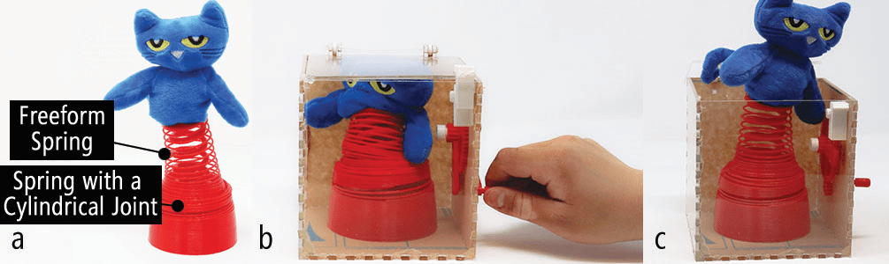
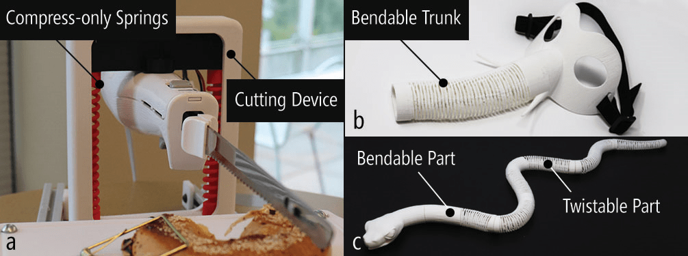
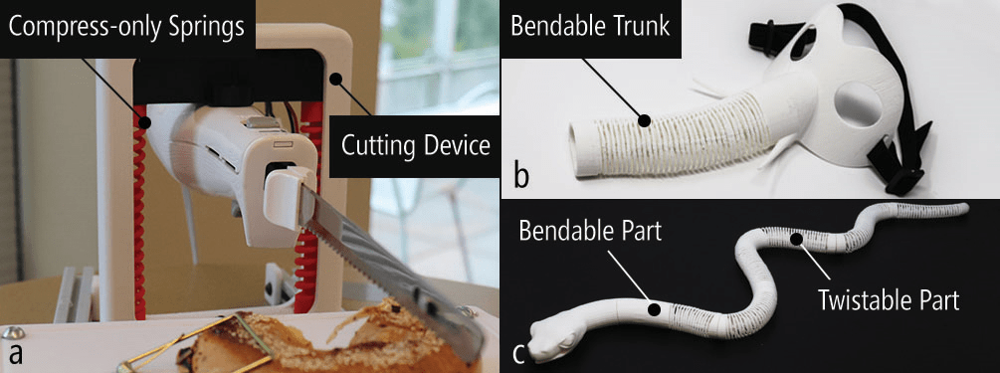

Ondulé is an interactive design tool that allows novices to create parameterizable deformation behaviors in 3D-printable models using helical springs and embedded joints.
Informed by spring theory and our empirical mechanical experiments, we introduce spring and joint-based design techniques that support a range of parameterizable deformation behaviors, including compress, extend, twist, bend, and various combinations. To enable users to design and add these deformations to their models, we introduce a custom design tool for Rhino. Here, users can convert selected geometries into springs, customize spring stiffness, and parameterize their design with mechanical constraints for desired behaviors.
To demonstrate the feasibility of our approach and the breadth of new designs that it enables, we showcase a set of example 3D-printed applications from launching rocket toys to tangible storytelling props. We conclude with a discussion of key challenges and open research questions.
Created by:
Liang He, Huaishu Peng, Michelle Lin, Ravikanth Konjeti, François Guimbretière, Jon E. Froehlich
Publications:
Figures: